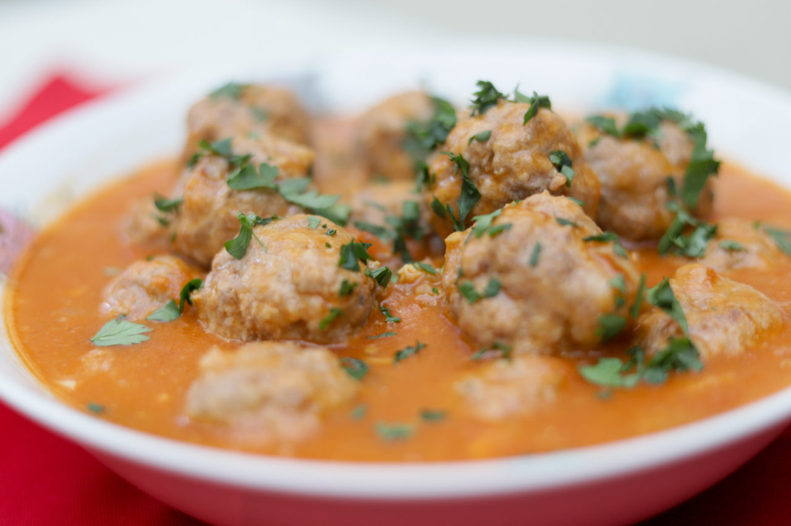

IPSReceitas
🔎
Receitas
Conta
Iniciar sessão
Email
Palavra-passe
Login
Fechar
Almôndegas

Ingredientes:
500/600 gr carne de vaca picada
1 cebola
2 dentes de alho
1 raminho salsa
1 ovo
4 colheres sopa pão ralado
200ml vinho branco
200ml polpa de tomate
Sal
Pimenta
Piri-piri
2 folhas de loureiro
Azeite
Farinha
Noz moscada
Passo a passo:
1
Começar por picar a cebola bem picadinha, assim como o alho, e a salsa.
2
Juntar à carne picada, temperar com sal, pimenta e misturar tudo com as mãos.
3
Juntar o ovo e o pão ralado, e mexer mais um pouco para ficar tudo bem misturado.
4
Moldar as almôndegas com as mãos, fazendo bolinhas. Depois passar por farinha e reservar.
5
Numa frigideira ou tacho de preferência anti-aderente, colocar azeite a tapar o fundo e as folhas de loureiro, e levar ao lume.
6
Assim que estiver quente, colocar as almôndegas para dourarem e selarem os sucos, virando-as.
7
Acrescentar de seguida o vinho e a polpa de tomate e deixar cozinhar em lume brando, virando as almôndegas com cuidado para que cozinhem de ambos os lados.
8
Acrescentar cerca de 100 ml de água. Temperar com sal, piri-piri a gosto e uns pózinhos de noz moscada. Demora cerca de 25/30 minutos.
9
Enfeitar com salsa.